Executive Summary
Full 3D RANS simulation of the transonic flow over the ONERA M6 wing — a canonical validation benchmark in aerodynamics — at M = 0.8395, Re = 11.72 × 10⁶ and α = 3.06°, matching the historical wind-tunnel conditions. Workflow covers domain construction in DesignModeler, body-of-influence mesh refinement with prismatic inflation targeting y⁺ ≈ 1, Fluent setup with the Spalart–Allmaras turbulence model and ideal-gas compressibility, and post-processing of pressure contours and chordwise Cp distributions at four spanwise stations (25 %, 60 %, 90 %, 99 % span).
The transonic character of the flow is captured cleanly: a supersonic pocket on the upper surface, terminated by a shock whose position moves aft as the station moves inboard, and a strong lower-to-upper Δp that generates the lift. Solution converges in 121 iterations to residuals below 10⁻³, with converged forces of 479.5 N lift and 53.3 N drag (lift-to-drag ratio ≈ 9). The computed Cp distributions agree qualitatively with published experimental data for the ONERA M6 at similar conditions.
Why the ONERA M6?
The ONERA M6 is a swept, tapered semi-span wing, originally tested by ONERA in the S2MA wind tunnel in the 1970s. Its published pressure-tap measurements at multiple Mach numbers made it the de-facto validation case for transonic CFD codes ever since — chosen here for exactly that reason: a code and mesh that gets the M6 right is a code and mesh you can trust on new geometries. The wing has no twist, uses the ONERA D symmetric section, and combines features that make transonic 3D flow interesting: sweep, taper, moderate aspect ratio, and Mach numbers that put shocks on the upper surface at reasonable angles of attack.
ONERA M6 in the wind tunnel — original test specimen
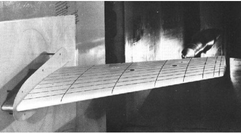
Semi-span installation with an end plate at the root, span 1.196 m, mean aerodynamic chord 0.646 m, 30° leading-edge sweep.
Problem Statement
Flow Conditions
Wing Geometry
Freestream Pressure Derivation
The static pressure was not given directly — it was computed from the specified Reynolds number, dynamic viscosity, temperature and Mach number via the ideal-gas relation:
c = √(κRT) = √(1.4 × 287 × 300) = 347.19 m/s
V∞ = M · c = 0.8395 × 347.19 = 291.46 m/s
P∞ = Re · μ · √(RT) / (M · cMAC · √κ) ≈ 85 740 Pa
This value was applied as the gauge pressure at every pressure-far-field boundary.
Computational Domain & Mesh
Bullet-Shaped Far-Field Domain
A half-circle sketch of 3 m radius was revolved around the Y axis in DesignModeler to produce a hemisphere, then the flat face was extruded 4 m downstream in the +X direction, giving a bullet shape — hemispherical nose upstream, cylindrical afterbody downstream. This is the standard external-aero domain: it puts the curved boundary far from the wing where it minimally interferes with the inviscid pressure field, and puts the flat outlet far behind so the wake has room to develop before hitting the boundary.
Bullet-shaped fluid domain (semi-transparent, symmetry plane visible)
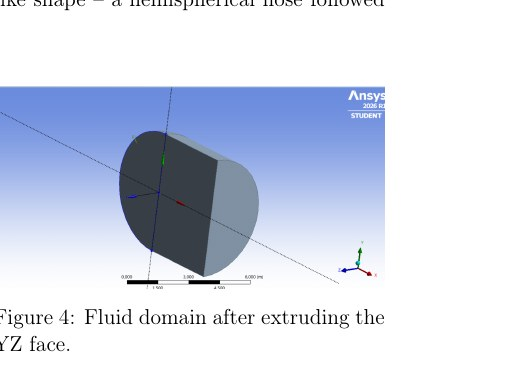
Total domain length ~7 m; wing sits in the hemispherical section with the root on the symmetry plane.
Body-of-Influence Refinement
A thin rectangular box tightly wrapping the wing was created as a separate solid and used as a mesh body of influence, letting the mesher refine the immediate vicinity of the wing to 90 mm cell size while the rest of the domain runs at 400 mm. This is the mesh-cost trick that makes 3D external CFD feasible: fine cells only where the physics is happening.
Body of influence sizing (0.09 m)
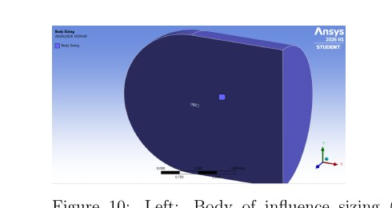
Rectangular BOI (blue) inside the bullet domain. Mesh refines from 0.4 m outside to 0.09 m inside.
Wing surface sizing (0.003 m at leading/trailing edges)
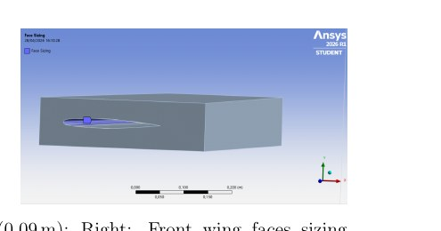
Leading and trailing edges at 3 mm; mid-chord at 9 mm — resolution concentrated where surface curvature and shock capture demand it.
Boundary-Layer Inflation
Prismatic inflation layers on the wing surface
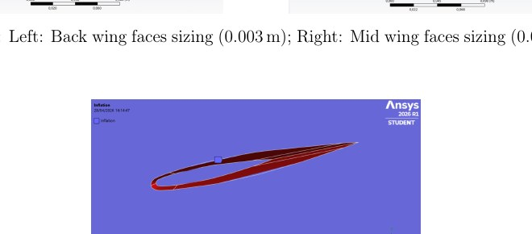
First-layer thickness 1.2 mm targeting y⁺ ≈ 1, 5 layers total, growth rate 1.2 — enough to resolve the viscous sublayer for the Spalart–Allmaras closure at this Reynolds number without spending cells on wake regions where inflation would be wasted.
Solver Setup
Spalart–Allmaras is the standard aerospace choice for attached wall-bounded flows with mild separation — a good accuracy-vs-cost balance for transonic wing calculations without the two-equation overhead of k–ω SST.
Convergence & Force Monitors
The simulation converged in 121 iterations. All equation residuals fell below the 10⁻³ tolerance, and the lift and drag monitors flattened to steady values well before the residuals cleared — the standard "residuals plus force monitors" pair used to confirm convergence on external-aero cases.
Residuals
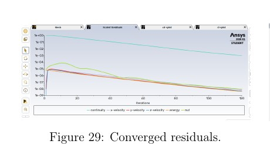
Continuity, velocity components, energy and modified turbulent viscosity — all monotonic, all under 10⁻³.
Drag coefficient
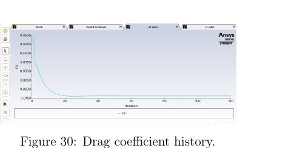
Cd settles inside the first 30 iterations and holds flat — early convergence typical of a well-set-up steady case.
Lift coefficient
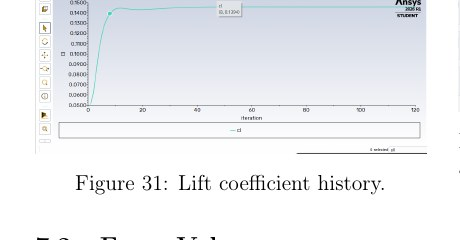
Cl equally flat. Converged forces on the wing: Lift = 479.5 N, Drag = 53.3 N (L/D ≈ 9).
Results
Pressure Contours & Shock Capture
Static pressure on the wing upper surface and symmetry plane

Low-pressure region (blue/green) develops on the forward part of the upper surface — the supersonic pocket. Downstream of it the pressure rises abruptly across a shock (the sharp colour transition), and then recovers gradually toward the trailing edge. The shock is swept, following the wing planform, and its chordwise location shifts along the span — exactly the transonic pattern the M6 is famous for.
Chordwise Cp at Four Spanwise Stations
To probe the shock behaviour along the span, the surface pressure was extracted at four y/b stations and non-dimensionalised as
Cp = (p − p∞) / (½ ρ∞ V∞²). Convention: negative Cp = suction (upper surface), positive Cp = compression (lower surface).
25 % span (inboard)
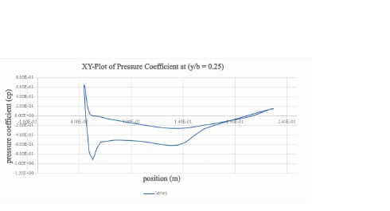
Deepest suction peak (Cp ≈ −1.5), shock furthest aft (x/c ≈ 0.5). Broad upper-surface suction region contributes the bulk of the lift. Root-side flow is effectively 2D thanks to the symmetry plane.
60 % span (mid)
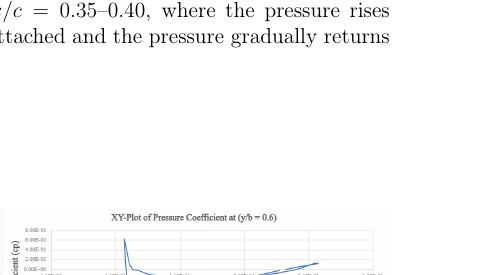
Suction peak Cp ≈ −1.4, shock still well aft. Widest upper-to-lower Δp along the span — the mid-wing carries the largest local lift.
90 % span (outboard)
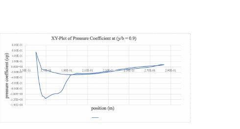
Suction peak Cp ≈ −1.2. Shock clearly at x/c ≈ 0.35–0.40 — moved forward relative to the inboard sections. Pressure recovery aft of the shock is smooth (flow stays attached).
99 % span (tip)
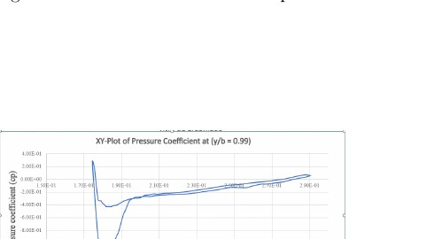
Near the tip: moderate suction peak, gradual pressure recovery. Tip-vortex 3D-relief effects unload the section and smear the shock — the "double-shock into single-shock" pattern the M6 shows in experiment.
Physical Reading of the Cp Series
- Shock walks forward outboard. The chordwise shock position moves from x/c ≈ 0.5 at the root to x/c ≈ 0.35 at 90 % span. Standard swept-wing behaviour: the effective Mach number normal to the leading edge decreases outboard, but 3D relief effects and lower local Reynolds number shift the shock forward.
- Suction weakens outboard. Peak −Cp drops from 1.5 to about 1.0 between root and tip — the section unloads as tip effects grow.
- Lower surface stays quiet. Lower-surface Cp is nearly flat and positive at every station — the lifting-line assumption holds well on the pressure side.
- Overall agreement with experiment. The four-station Cp pattern (double-shock inboard, single-shock outboard, position and strength trends) matches the published ONERA M6 wind-tunnel data qualitatively. Quantitative differences — exact shock location, exact suction peak — are within the range attributable to the Spalart–Allmaras closure, mesh resolution, and the ideal-gas assumption.
Conclusion
The simulation reproduces the ONERA M6's canonical transonic signature: a shock-terminated supersonic pocket on the upper surface, whose position walks forward from root to tip in the pattern seen in the wind-tunnel data. Body-of-influence refinement plus y⁺ ≈ 1 inflation gave a mesh that resolves the shock cleanly at manageable cell count, and the Spalart–Allmaras closure with ideal-gas compressibility converged in 121 iterations to steady lift and drag. The chordwise Cp at four spanwise stations lines up qualitatively with published experimental data — the standard validation criterion for a transonic wing solver setup. Natural next steps: a formal grid-convergence study, quantitative Cp overlay against the ONERA experimental points, and a sensitivity check on the turbulence model (SST k–ω, transition-sensitive variants) to tighten the shock-position prediction.
✓ Project Outcomes
- 3D transonic RANS on the canonical ONERA M6 benchmark at M = 0.84, Re = 11.7 × 10⁶
- Bullet-shaped far-field domain + body-of-influence refinement + y⁺ ≈ 1 inflation
- Spalart–Allmaras closure with ideal-gas compressibility, coupled pressure–velocity, 2nd-order upwind
- Converged in 121 iterations to residuals below 10⁻³; L = 479.5 N, D = 53.3 N (L/D ≈ 9)
- Swept shock captured; chordwise Cp extracted at 25 %, 60 %, 90 %, 99 % span
- Qualitative agreement with published ONERA M6 wind-tunnel data